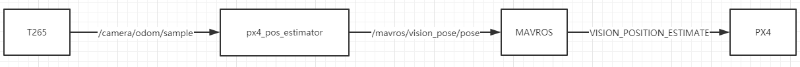
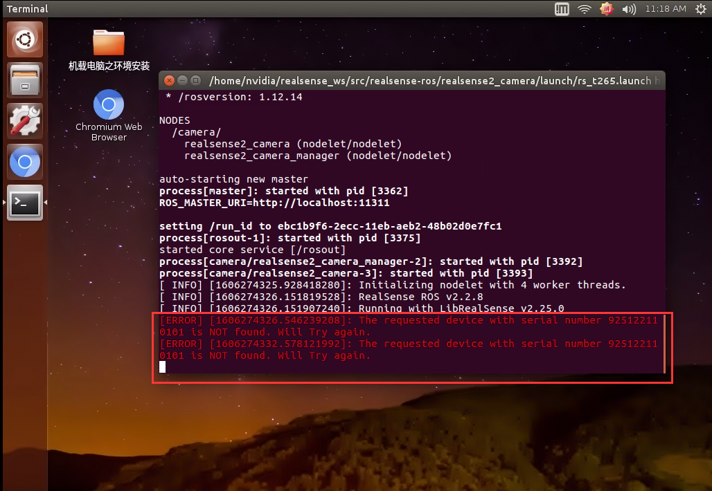
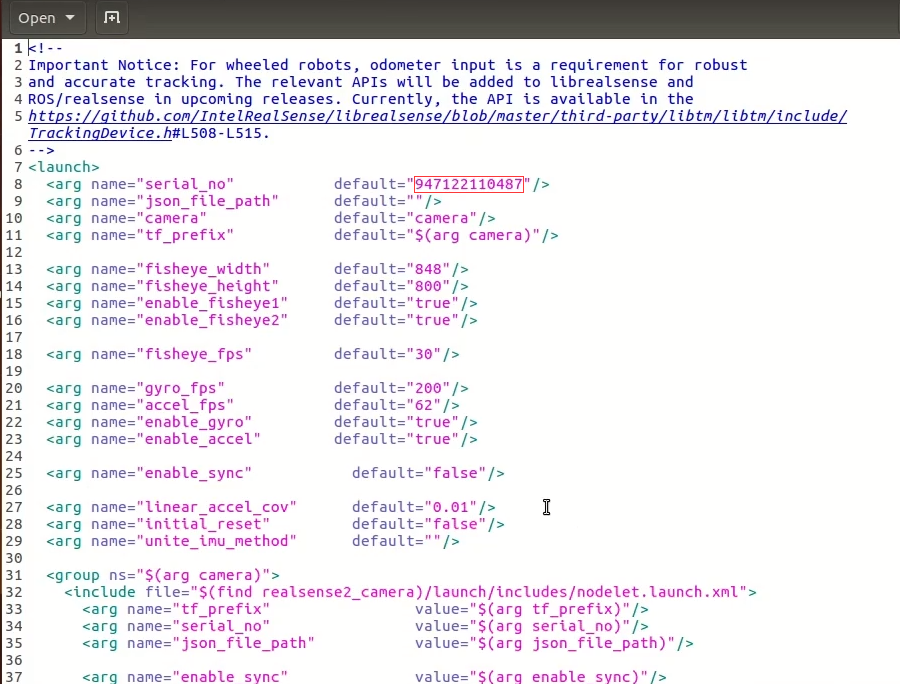
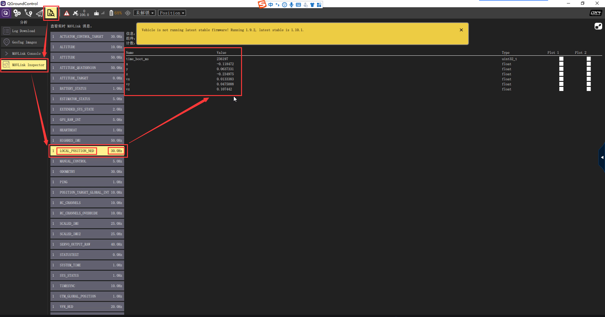

基于prometheus和T265实现室内无人机定点飞行¶
1，消息流¶
消息流如下图所示
2，软件和硬件环境¶
硬件
P200无人机
TX2
Holybro pixhawk4
T265
软件
1.10.0版本PX4固件
ubuntu16.04
nomachine（下载：https://www.nomachine.com/，使用方法：nomachine使用方法）
6，软件修改¶
修改rs_t265.launch里的设备号
rs_t265.launch位于/home/nvidia/realsense_ws/src/realsense-ros/realsense2_camera/launch/文件夹下
如果运行roslaunch realsense2_camera rs_t265.launch出现以下报错
双击打开rs_t265.launch文件，将下图红框内数字删除并保存此文件即可，数字两边的引号等等的不需要删除，仅需删除红框内数字。
7，命令运行¶
使用nomachine远程登录TX2
打开一个新终端，运行以下命令 roslaunch prometheus_experiment prometheus_px4_realsense.launch
8，飞行前的检查¶
rostopic echo /tf 消息打印正常代表T265节点起来运行正常 r
ostopic echo /mavros/vision_pose/pose 消息打印正常代表px4_pose_estimate节点起来运行正常
rostopic echo /mavros/state 为true代表MAVROS和飞控连接正常
打开地面站（此时建议用USB线连接电脑与飞控）看到LOCAL_POSITION_NED消息频率为30Hz，而且移动无人机看xyz数据的变化是否符合北东地坐标系，默认一开始机头方向为正东方向，具体表现为：向上移动无人机，Z的数据是往负方向变大，往左移动无人机是X的数据往正方向变大，往前方向也就是机头方向移动无人机，y往正方向变大。
9，实际飞行¶
以上检查确认正确之后 遥控器定点模式下解锁起飞即可。 演示视频如下。